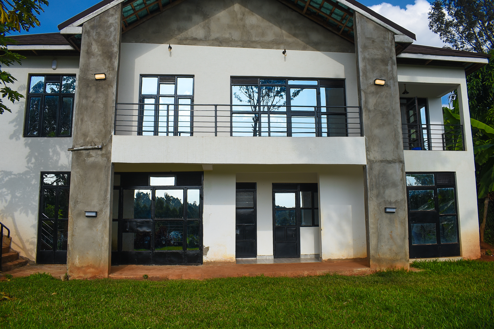
A tranquil 3-bedroom holiday home nestled on a 1.5-acre farm. Large sunset-view balconies, nightly bonfires under mountain skies, and winding walks through emerald tea estates.
“A road trip into the heart of nature’s artistry—where cascading waterfalls meet lush tea landscapes, moonlit bonfires, and crisp countryside air.”
Located along Ikuu–Chera Road in Chuka, Tharaka Nithi County, The STER Farmhouse was created by hosts Stella and Eric as a sanctuary away from the rapid pace of the city. Here, days start with birds chirping along the old Safari Rally trail and finish on an expansive viewing balcony as the sun sets over rolling tea hills.
Whether you seek quiet reading corners bathed in natural highland light or expansive spaces to host unforgettable dinners with loved ones, The STER Farmhouse is built to embrace you.
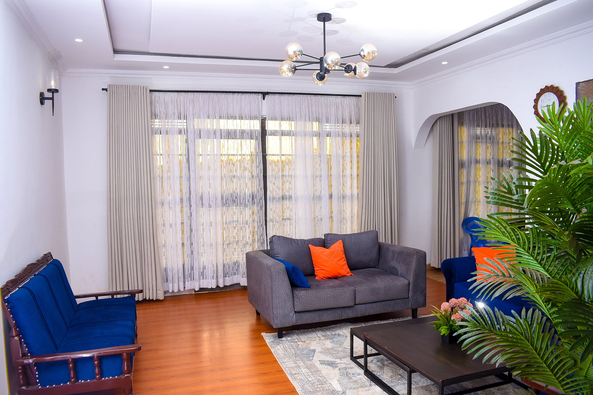
The central living room is designed with comfortable plush seating, ambient lighting, and large windows that fill the home with mountain sunshine. When the cool highland evening rolls in, gather inside for lively conversation and board games.
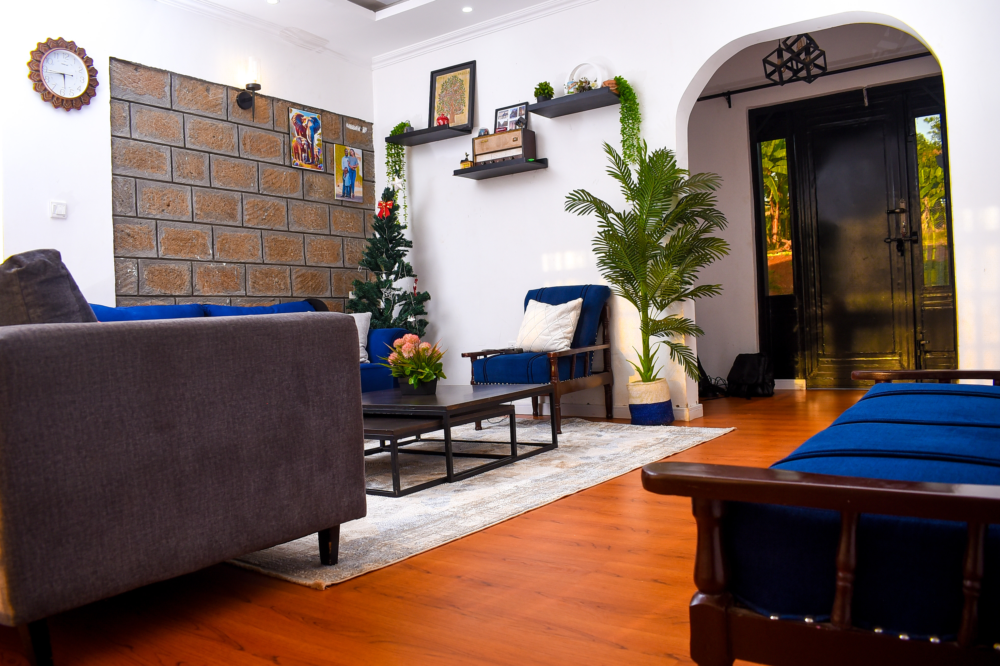
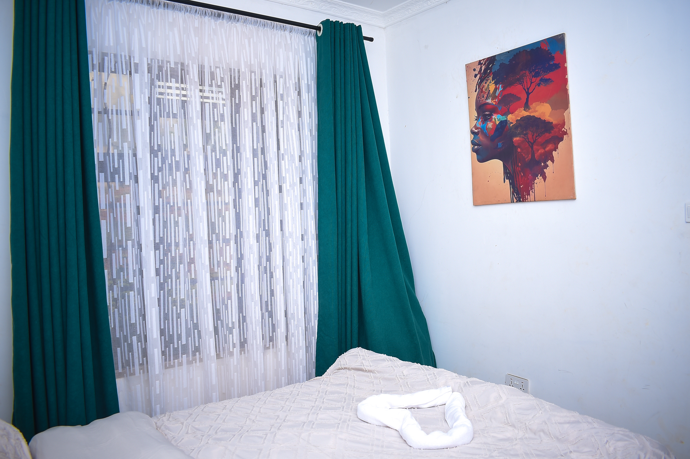
Step onto the expansive viewing balcony or settle into the dedicated chill zone by the floor-to-ceiling windows. Enjoy your morning cup of fresh Kenyan highland tea while watching mist lift off the green tea farms.
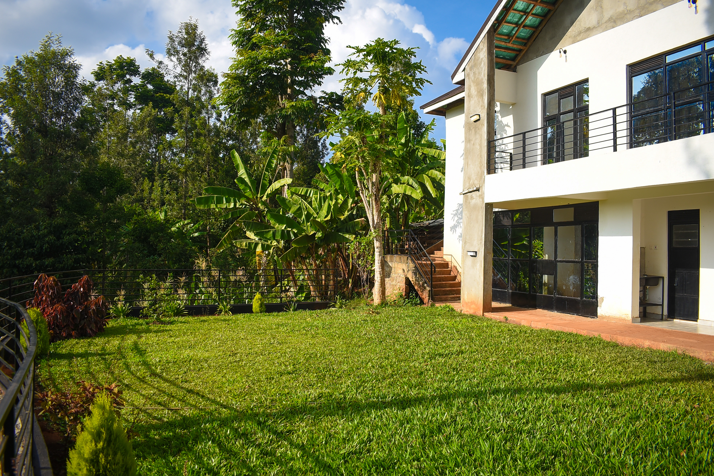
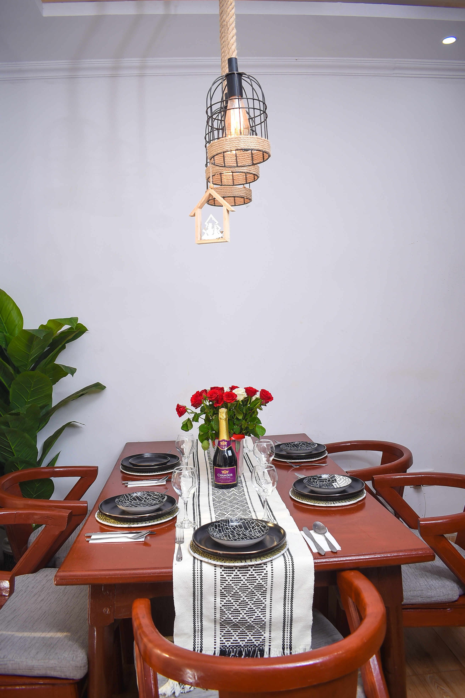
A distinctive highlight of STER Farmhouse is the large conclave room overlooking the lush backyard. Featuring a solid wood banquet table, it is the perfect venue for intimate family dinners, small milestone celebrations, or productive creative team retreats.
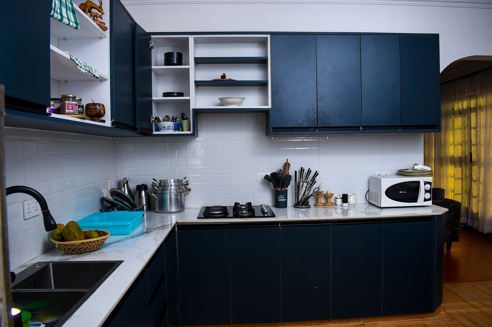
Cook freely with a fully stocked modern kitchen complete with a stove, refrigerator, microwave, cookware, and tableware. Prefer not to cook? A private personal chef is available on request to prepare delicious local and international farm-to-table dishes.
Seamless connectivity for remote work, streaming, or video calls amidst nature.
Reliable on-site power and hot water so your stay is uninterrupted and comfortable.
Dedicated outdoor fire pit in the backyard for stargazing, stories, and roasts.
Your furry companions are warmly welcomed to run and explore the secure 1.5-acre lawn.
Gated and fenced compound with ample secure parking for multiple vehicles.
Delicious freshly cooked culinary service available upon advance reservation.
STER Farmhouse is an active, integrated ecological farm. The grounds feature organic kitchen gardens bursting with seasonal leafy greens, tomatoes, and fresh herbs, complemented by a flourishing fruit orchard.
Children and adults alike will love interacting with our farm animals—including poultry, dairy goats, and friendly rabbit rearing. Guests are welcome to harvest fresh organic produce at subsidized rates for their cooking.
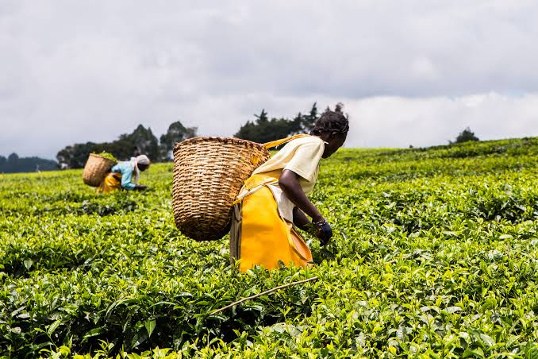
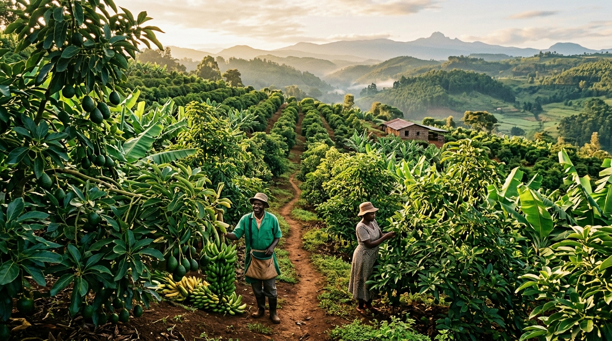
Looking for something truly authentic during your stay at STER Farmhouse? Take a relaxed 30-minute scenic drive to STER Farms for an immersive, behind-the-scenes look at Kenyan highland farming.
Wander through our flourishing Hass avocado and banana groves, visit the active beehives producing pure highland honey, and meet the free-range goats and chickens. It’s a wonderful chance to reconnect with nature, learn sustainable farming, and simply enjoy the slower, richer side of life in Tharaka Nithi.
Three serene private bedrooms designed to comfortably sleep up to 6 guests. Draped in crisp cotton linens with soothing highland breezes and tranquil night views.
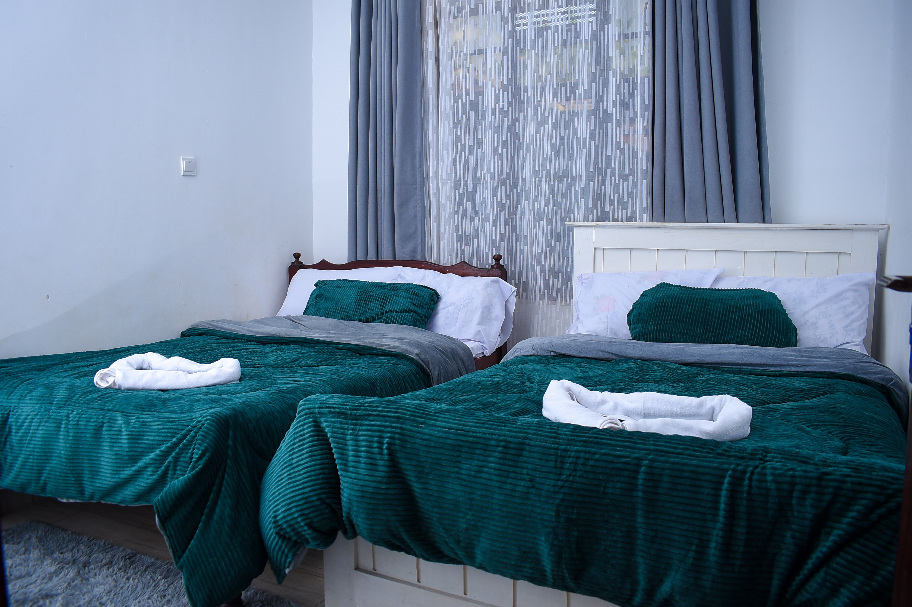
Two comfortable single beds designed for children, family, or travel companions looking for restful quietude.
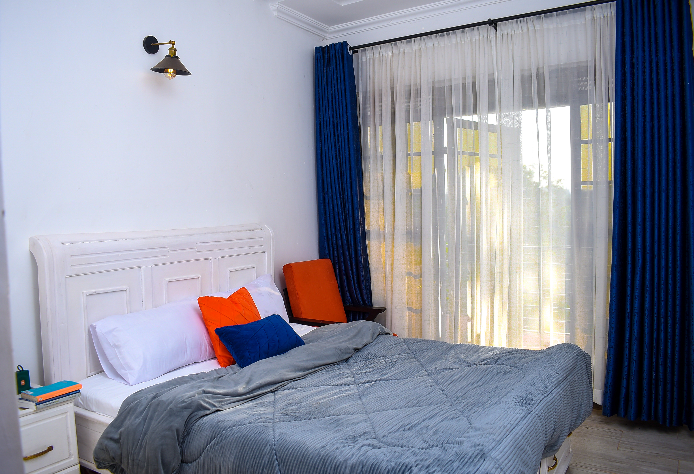
Awaken to golden morning sunshine streaming over the tea plantations through expansive glass picture windows.
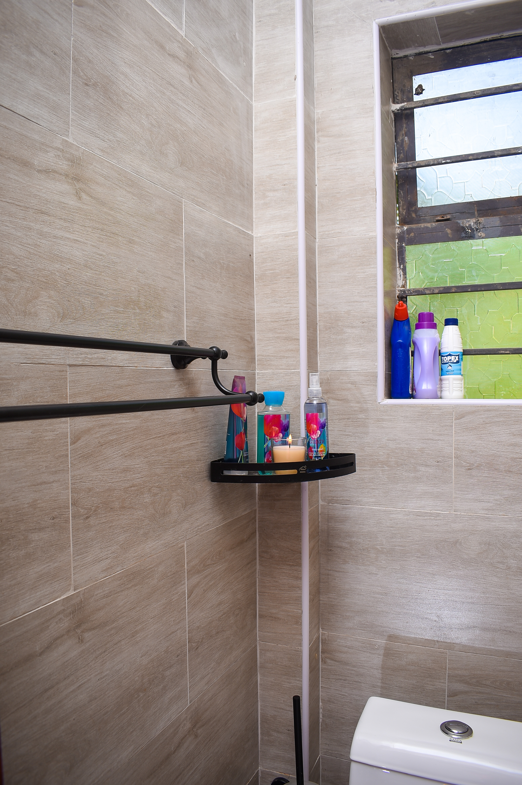
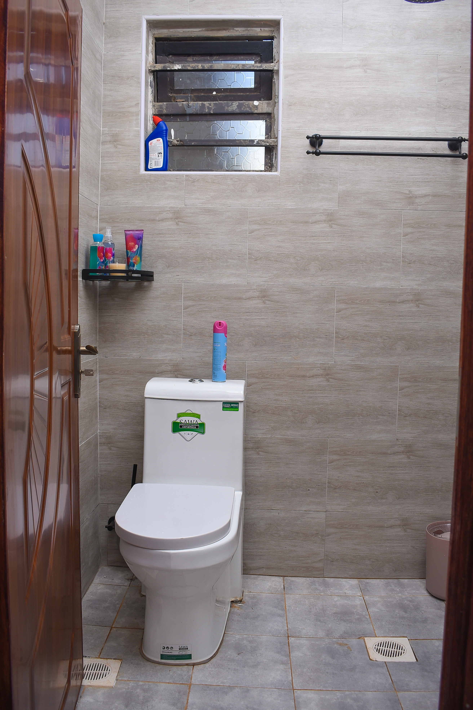
Tharaka Nithi County is a paradise for hikers, nature lovers, and waterfall chasers. Step beyond the farmhouse gate to experience Kenya’s most untouched highland landscapes.
A 30-minute drive to STER Farms for a relaxed behind-the-scenes look at countryside farming—from lush Hass avocado and banana groves to apiculture beehives, goats, and chickens.
A breathtaking natural spectacle hidden deep within lush indigenous forest. Cool crystal water plunges into a wide natural swimming pool crossed by a scenic walking bridge.
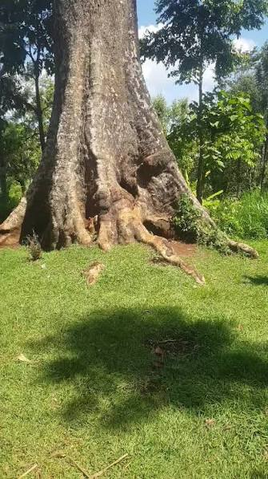
12 MINS DRIVEWidely recognized as the tallest tree in Kenya, reaching an estimated height of 85 meters and believed to be over 200 years old. An awe-inspiring natural monument in our immediate neighborhood.
Direct access from the farmhouse to the historic Safari Rally road. Perfect for crisp morning jogs, serene cycling, or gentle afternoon walks while listening to the birds in the tea bushes.
The most magnificent ascent route to Mt. Kenya’s summit and Gorges Valley, easily accessed from our location.
A safe haven within Mt. Kenya forest where majestic elephants gather to give birth during the wet seasons.
Thunderous cascades and kopjes along River Kathita for passionate waterfall lovers.
Enjoy direct-booking privileges. Select your dates below to instantly calculate your total and submit your reservation request directly to our host concierge.
A 50% deposit via M-Pesa Till / Paybill or Bank Transfer confirms your booking dates. Balance payable upon arrival.
The journey begins with an easy 3-hour scenic road trip from Nairobi via the Thika Superhighway and the scenic Embu–Meru highway to Chuka in Tharaka Nithi County.
Ikuu–Chera Road, Chuka, Tharaka Nithi County, Kenya
Detailed pin location and driving instructions are provided instantly upon reservation confirmation. The access road is suitable for all passenger vehicles and 4x4s.
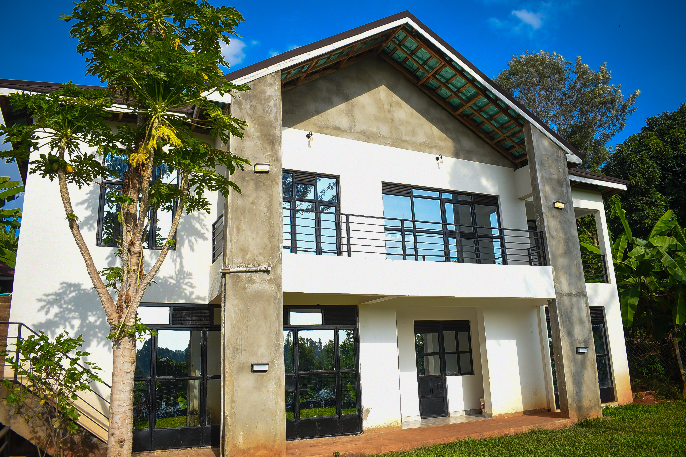
Tag your memories with us using #STERFarmhouse
Visit Our Instagram Profile →